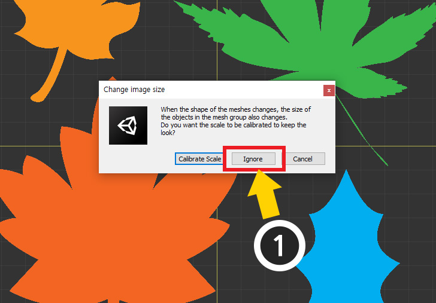
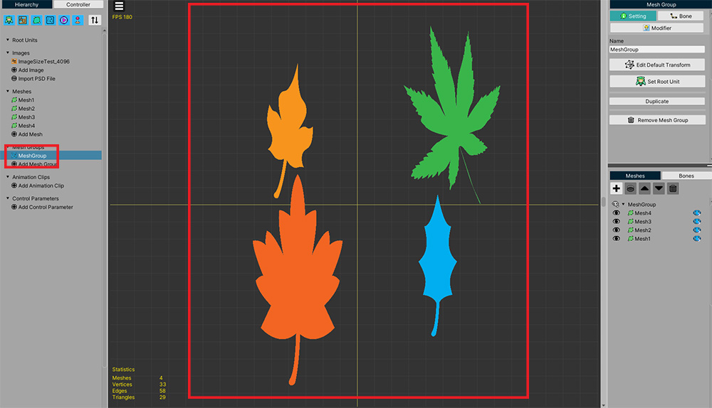

AnyPortrait > 메뉴얼 > 이미지 크기 변경하기
이미지 크기 변경하기
1.3.4
대부분의 경우 AnyPortrait에서 사용되는 "이미지(Image)"는 유니티에서의 텍스쳐 에셋의 설정을 그대로 따릅니다.
그래서 일반적으로 "이미지의 실제 크기", "텍스쳐 에셋으로서의 임포트된 크기", "AnyPortrait에서 설정된 크기"들은 모두 동일합니다.
하지만 경우에 따라선 이미지의 크기의 값이 서로 다를 수 있습니다.
텍스쳐 에셋에서 이미지의 크기를 줄여서 임포트할 수도 있으며, AnyPortrait에서 실제와 다르게 이미지의 크기를 설정할 수도 있습니다.
이 페이지는 이러한 특별한 상황에 유용한 내용을 다루고 있습니다.
안내
이 페이지에서 소개하는 기능은 실제로 이미지 파일의 크기를 변경하는 것이 아닙니다.
"실제 크기"와 "유니티 또는 AnyPortrait에서 인식한 크기"를 구분해야 하며, 이 페이지는 "실제 크기"에 대해서는 다루지 않습니다.
이미지의 크기 속성을 변경하기

AnyPortrait 에디터에서 이미지를 선택하면 위와 같은 정보들이 나타납니다.
(1) AnyPortrait에서의 이미지의 크기입니다.
(2) 유니티의 텍스쳐 에셋으로서의 이미지의 크기입니다.
(3) 이미지의 크기를 변경하는 UI입니다.

만약 텍스쳐 에셋으로서의 크기와 AnyPortrait에서의 크기가 다르다면 어떻게 나타날까요?
준비한 예제의 실제 이미지의 크기는 "4096 x 4096"이었으며, 유니티의 임포트 설정으로 인해서 "2048 x 2048"로 변경된 상태였습니다.
그리고 그 이미지를 AnyPortrait에서 열었으므로, 현재는 "2048 x 2048"로 동일하게 보였던 것입니다.
위와 같이 텍스쳐 임포트 설정을 변경하여 이미지의 크기를 크게, 또는 더 작게 만들어 봅시다.
(이 예시 외에도 텍스쳐의 크기가 바뀌는 경우는 다양합니다.)

다시 AnyPortrait 에디터로 돌아가서 이미지를 선택해봅시다.
(1) 텍스쳐 에셋의 크기가 "4096 x 4096"으로 바뀌어져있는 것을 볼 수 있습니다.
AnyPortrait의 이미지 크기와 다르기 때문에 붉은색 글씨로 바뀌었습니다.
보통은 이미지의 크기 속성이 서로 다른 상태에서 제작을 한다 하더라도 큰 문제는 없습니다.
오히려 이미지의 크기를 변경하면 이미 작업한 메시들에 영향을 줄 수 있어서 조심해야합니다.
하지만 작업 초기일 때, 일관된 크기 속성을 가지고 작업을 하고자 한다면 아래의 순서대로 이미지의 크기를 변경해봅시다.

(1) Change Size 항목의 크기 입력 칸에 바꾸고자 하는 이미지 크기의 가로, 세로를 각각 입력합니다.
(2) Apply 버튼을 누릅니다.
(3) 경고 메시지가 나타납니다. Okay 버튼을 누릅니다.

이때 경고 메시지가 하나 더 나타납니다.
이것은 이미지의 크기를 변경할 경우 메시 그룹 내의 메시들에 영향을 주기 때문에, 이를 어떻게 처리할 지를 물어보는 메시지입니다.
두가지 옵션이 제공되며, 후술되는 설명에 따라서 버튼을 누르면 되겠습니다.
Calibrate Scale 또는 Ignore 버튼을 누르면 이미지 크기가 변경됩니다.
메시 그룹 내의 메시들의 크기 보정 여부
이미지의 크기를 변경하면 이미지의 크기 변경 비율에 맞게 메시들의 크기가 변경됩니다.
따라서 캐릭터의 메시들이 손상되지는 않습니다.
하지만 메시 그룹에 배치된 메시들의 경우는 조금 다릅니다.

설명을 위해서 위와 같은 상황을 설정해보았습니다.
(1) 메시 그룹을 하나 만들었습니다.
(2) 여기에 4개의 메시들을 추가했습니다.

다시 돌아와서 이미지의 크기를 변경해봅시다.
(1) 이번에는 이미지의 가로, 세로의 비율을 인위적으로 바꾸어보고자 가로만 절반으로 줄여봅니다.
(2) Apply 버튼을 누르고 (3) 경고 메시지의 Okay 버튼을 누릅니다.

위에서 확인했던 경고 메시지가 나타납니다.
기존의 메시 그룹 내의 메시에 영향을 줄 수 있음을 알려줍니다.
Cancel을 제외하고 두가지 선택지가 있음을 볼 수 있습니다.
- Calibrate Scale : 메시 그룹 내의 메시의 기본 크기에 이미지의 크기 변경 비율을 역으로 적용하는 보정 과정을 거쳐서 기존 형태를 가능한 유지하도록 만듭니다.
- Ignore : 별도의 보정 과정을 거치지 않고 이미지의 크기를 변경합니다.
(1) 일단 Calibrate Scale 버튼을 눌러서 결과를 확인해봅시다.

메시 그룹을 확인하기 전에 메시들을 확인해봅시다.
이미지의 폭이 절반으로 줄어든 만큼 메시들도 세로로 길어진 형상을 하고 있음을 볼 수 있습니다.

그런데 메시 그룹을 선택해서 확인해보면 메시들의 크기가 바뀌지 않은 것 처럼 보입니다.
(1) Edit Default Transform을 활성화한 상태에서 메시를 선택합니다.
(2) X 크기가 2배로 증가한 것을 볼 수 있습니다.
Calibrate Scale 옵션을 이용하면 메시들의 크기를 보정하여 겉모습이 가능한 유지되도록 만듭니다.
다만, 이것은 기초적인 보정이며 모디파이어가 적용된 상태라면 기존과 다른 결과를 보여줄 수 있음을 유의해주세요.

이미지의 크기를 변경하기 전으로 다시 돌아와서 이번에는 Ignore 버튼을 눌러봅시다.

메시 그룹을 선택하면 이미지가 축소된 비율만큼 메시들도 같이 축소된 것을 볼 수 있습니다.